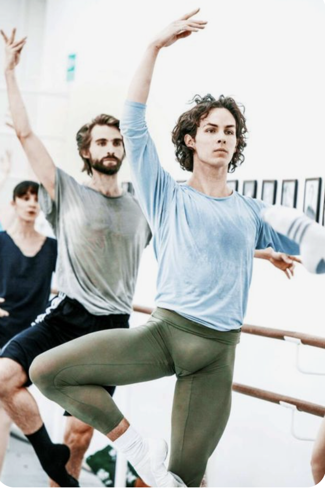

Før din første time
Her får du svar på de spørgsmål, der kan fylde får din første ballettime: Hvordan foregår den? Hvad skal du have på? Og hvad gør du, hvis du ikke kan følge med?
Sådan foregår en begyndertime
Timen varierer fra skole til skole, men ofte vil du møde disse dele:
-
Opvarming
I begynder med bevægelser, der gør kroppen klar til undervisningen.
-
Øvelser ved barren
Barren er den stang, du støtter dig til. Her arbejder I med ballettens grundlæggende bevægelser og koordination.
-
Bevægelser på gulvet
I øver derefter uden støtte fra barren og sætter bevægelser sammen til små kombinationer.

Hvad skal du have på?
Tøj
Vælg behageligt træningstøj, du kan bevæge dig frit i - fx leggings, shorts eller træningsbukser og en t-shirt eller sportstop. Tøj, der sidder forholdvis tæt, gør det lettere for underviseren at se dine bevægelser og din kropsholdning.
Start gerne med noget, du allerede har, og tjek skolens krav, før du køber nyt.
Sko
Du behøver ikke nødvendigvis købe balletsko før din første time.
Spørg skolen, om du må bruge strømper til en prøvetime. Hvis skolen kræver balletsko, skal du vælge bløde balletsko i lærred eller læder.
-Tåspidssko er ikke begyndersko.
Størrelserne kan variere mellem mærker og modeller, så få hjælp i butikken for at finde den rette pasform/størrelse.
Hvis du ikke kan følge med
Fortæl underviseren, at det er din første time.
Du må gerne spørge og have brug for at se en bevægelse igen.
Du behøver ikke huske det hele eller følge med i alt fra starten.
Det hjælper også at kigge på de andre, hvis de virker mere erfarne.
Prøv dine første trin